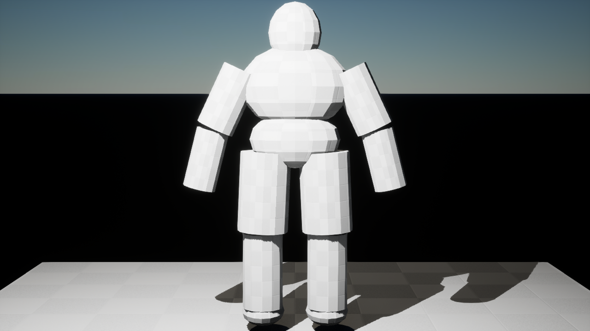
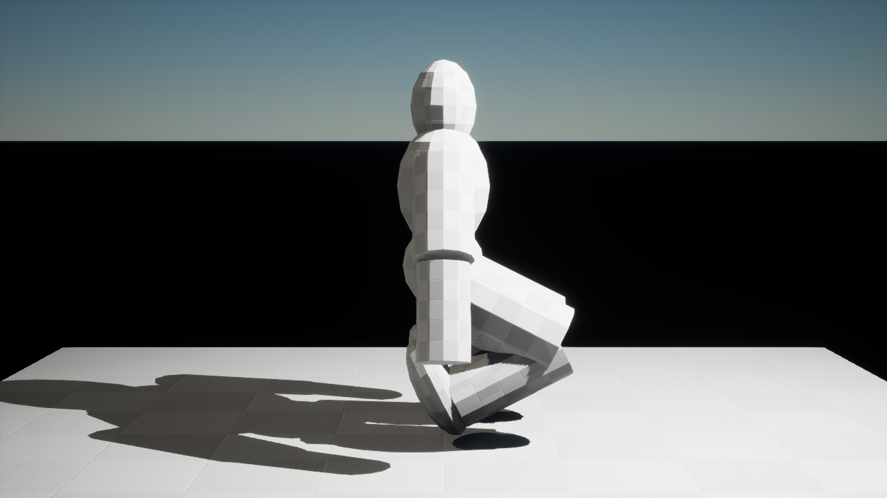
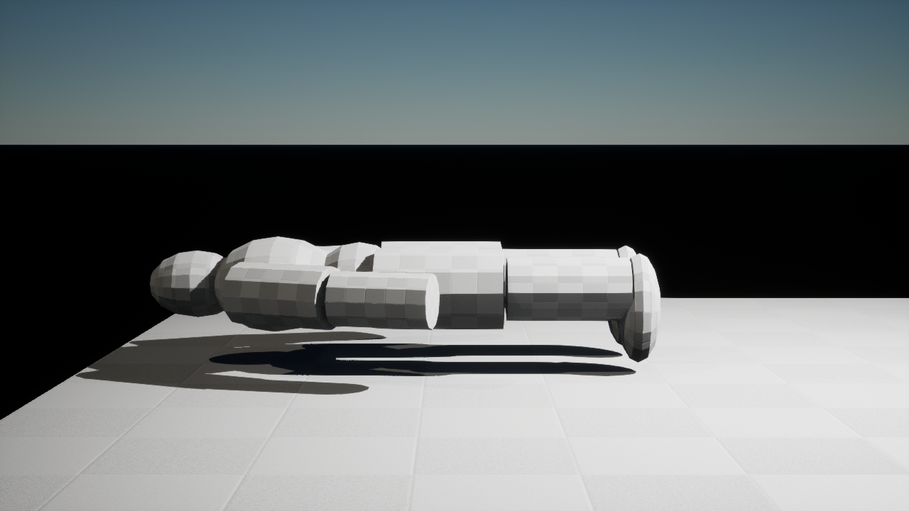
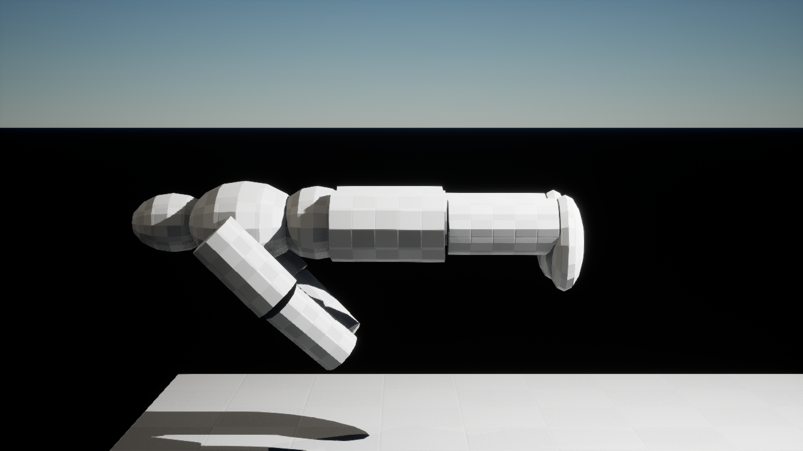
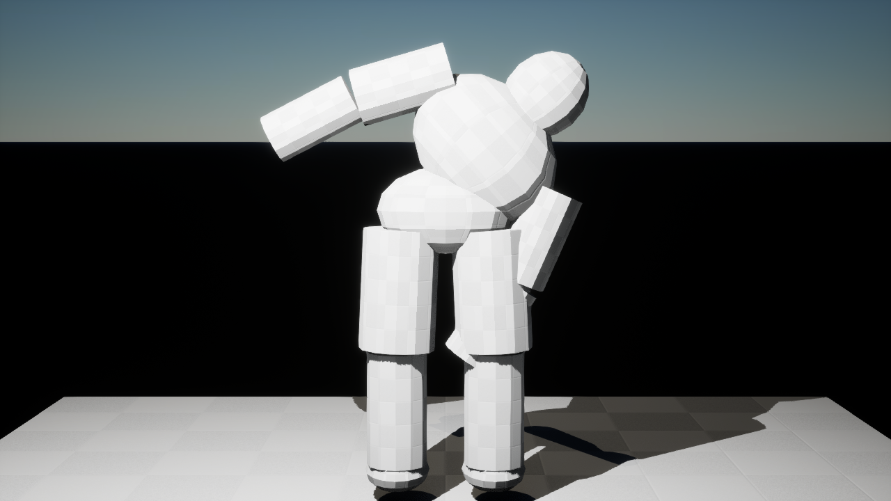
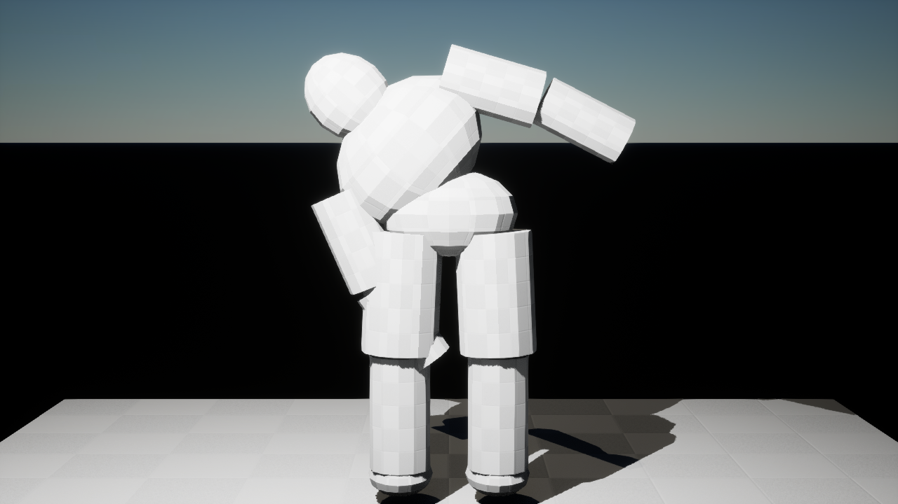
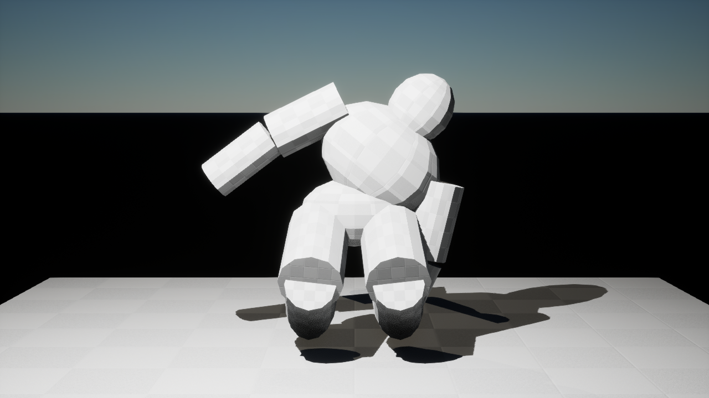
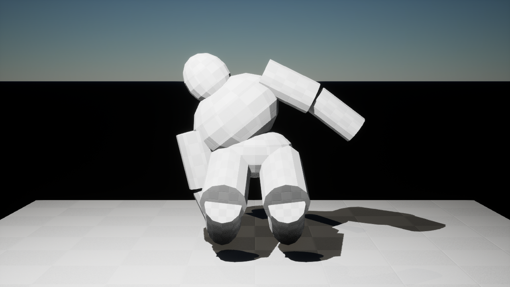

{kind=link}

Standing
Frame 1 · standing skeletal mesh height 180.0 cm.
Topside / Combat + Medical / isolated V03 rig
Eight fresh Unreal PIE captures of the same V03 SkeletalMeshActor evaluating its imported animation sequence. These are live skeletal poses, not baked static pose meshes. Tap any image to open it full size.

Frame 1 · standing skeletal mesh height 180.0 cm.

Frame 20 · head descends 45.471 cm from standing.

Frame 40 · horizontal body, head 24.845 cm above actor origin.

Frame 60 · horizontal body, head 101.157 cm above actor origin.

Frame 80 · head −26.295 cm in Y from pelvis; anatomical left.

Frame 100 · head +26.293 cm in Y from pelvis; anatomical right.

Frame 120 · head −21.954 cm in Y from pelvis.

Frame 140 · head +21.991 cm in Y from pelvis.
| Bone/pose | Y from pelvis |
|---|---|
| LeftThigh | −16.000 cm |
| RightThigh | +16.000 cm |
| Lean left head | −26.295 cm |
| Lean right head | +26.293 cm |
| Crouch lean left head | −21.954 cm |
| Crouch lean right head | +21.991 cm |
{kind=link}
{kind=link}
{kind=link}
{kind=link}
{kind=link}
{kind=link}
{kind=link}